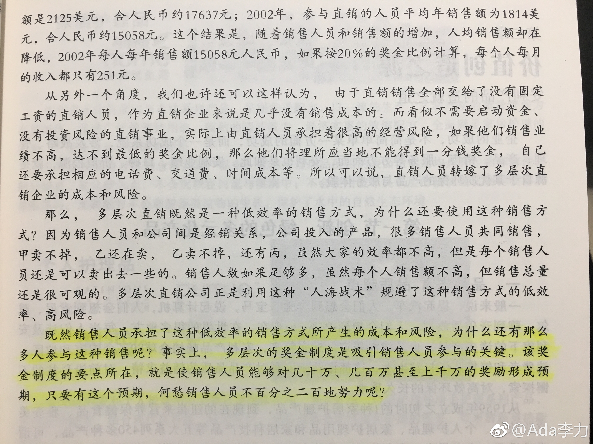

#读书#多层次直销是一种低效率的销售方式 - 我还是认同这个判断的
几个数据：
1，收入上看，90%的直销人员的按小时收入，抵不上最低工资
2，80%的直销产品，是直销人员自己消费掉的。
3，直销人员的流失率，每年在40%以上。
所以，最关键的还是“致富（暴富）”这个预期是否能被直销员认同并接受。
几个数据：
1，收入上看，90%的直销人员的按小时收入，抵不上最低工资
2，80%的直销产品，是直销人员自己消费掉的。
3，直销人员的流失率，每年在40%以上。
所以，最关键的还是“致富（暴富）”这个预期是否能被直销员认同并接受。
- 